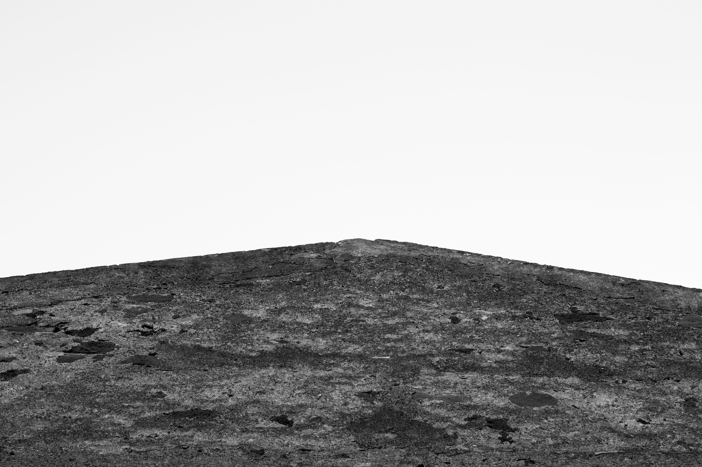

MURI

"Muri" nasce dall’osservazione attenta delle superfici urbane in bianco e nero. Mi sono concentrata sui dettagli e sulle texture, lasciandomi guidare dalle forme e dai contrasti, cercando di cogliere l’essenza visiva di ciò che normalmente passa inosservato.